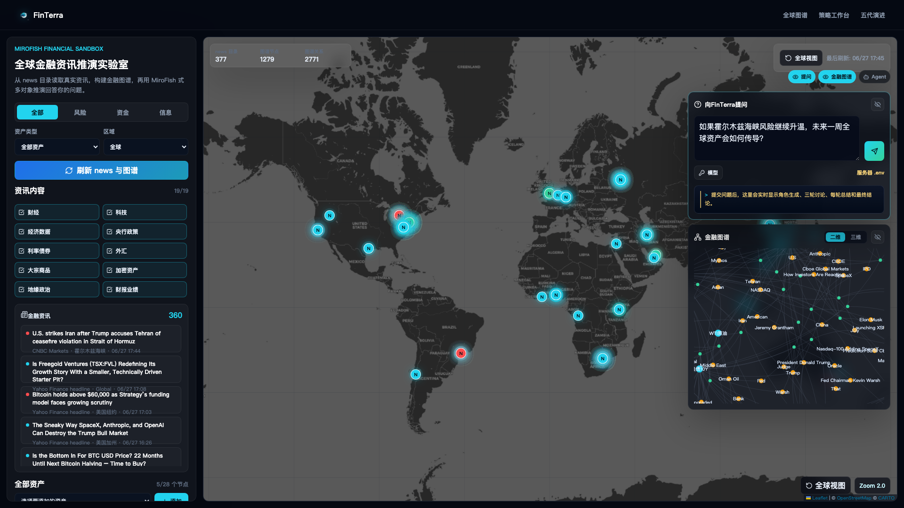
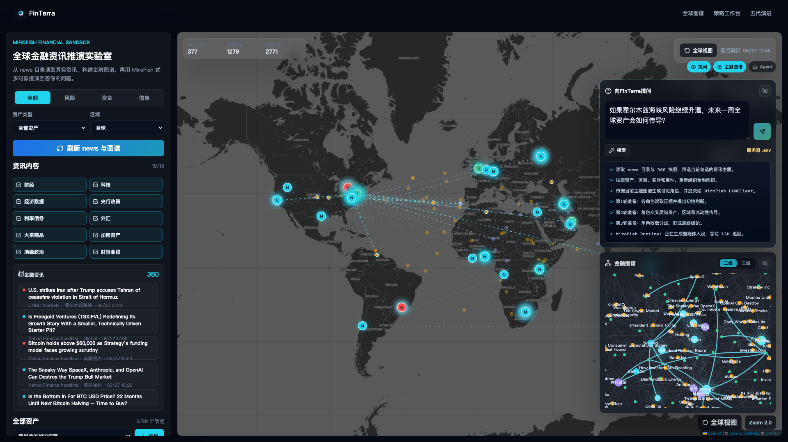
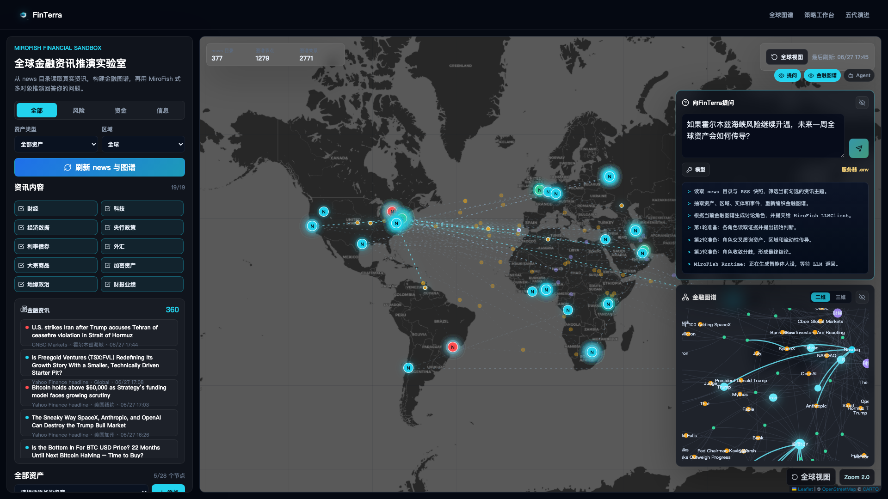
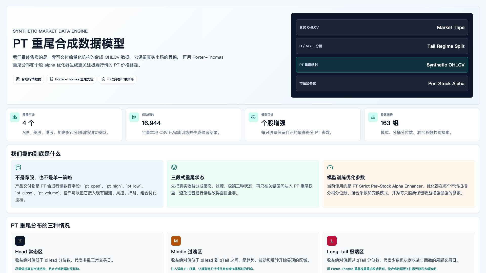
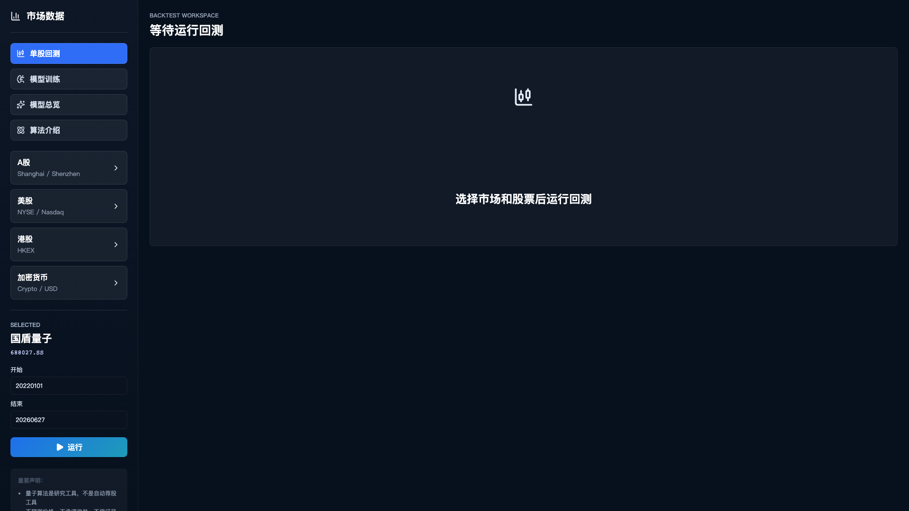
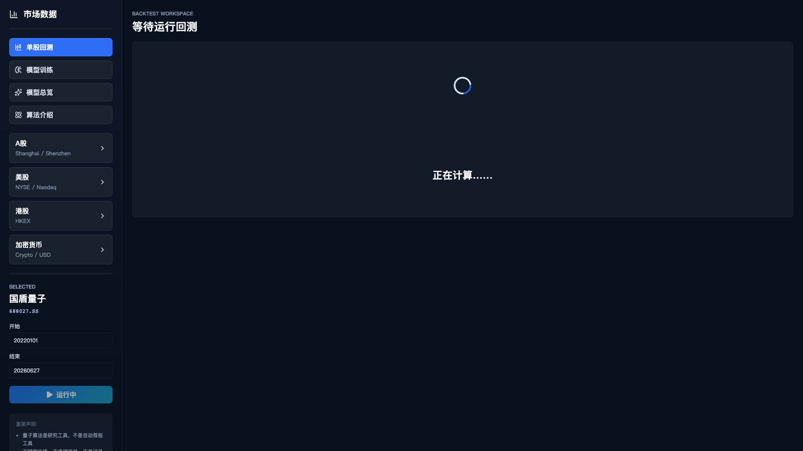
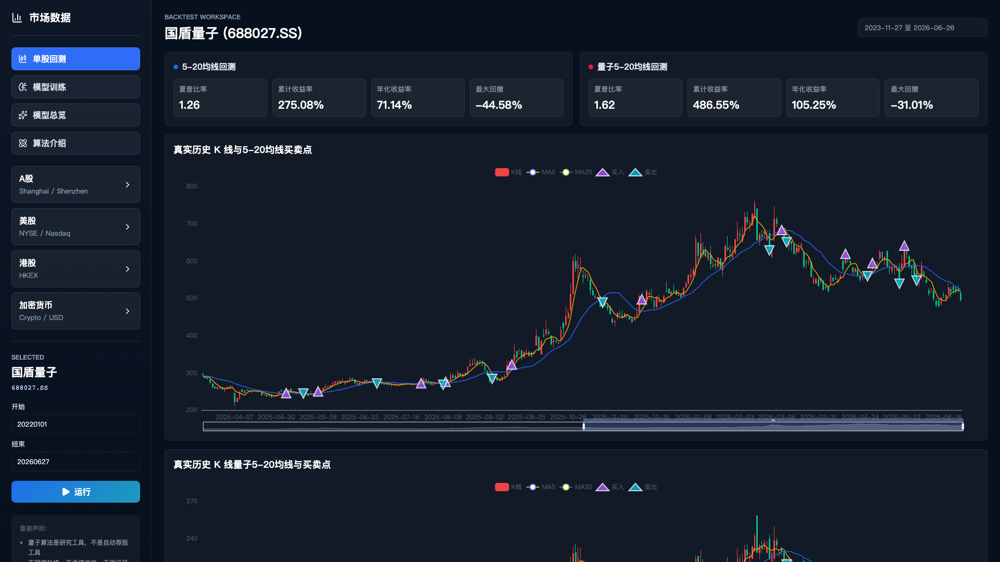
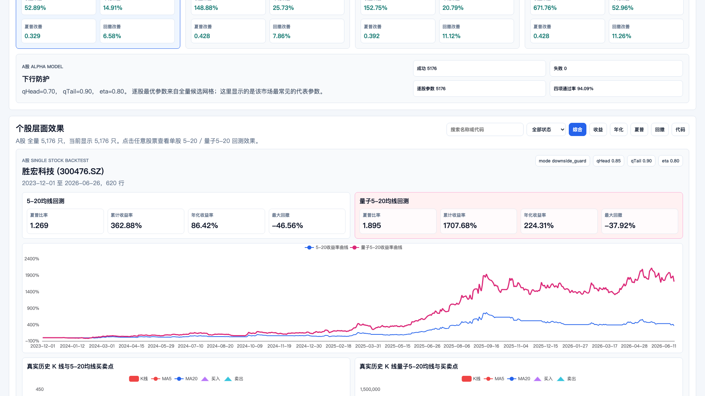

把 news 目录、RSS 快照和资产节点重新编织成市场关系网。
当新闻、资产、模型和回测分散在不同工具里，真正的风险往往藏在传导路径中。

00:00把 news 目录、RSS 快照和资产节点重新编织成市场关系网。
围绕同一个问题生成角色、交叉质询、收敛分歧。
用重尾先验生成更关注极端状态的 OHLCV 路径。
同一套策略，在真实路径与 PT 路径上并排回测。
FinTerra 不是把 AI 做成聊天框，而是把金融研究流程做成可运行、可验证的工作台。
00:15系统读取真实资讯源，抽取资产、区域、实体和事件，让宏观风险以节点和关系呈现。
00:30
角色生成、证据读取、三轮讨论和交叉质询，不再藏在后端日志里，而是直接成为研究过程的一部分。
画面中的过程流来自真实点击后的中间生成状态。
00:45风险传导从一段解释，变成一张会响应的网络。研究员可以看到系统正在关注哪些资产、区域和事件。

01:00
它不改变客户原策略，而是交付一层更重视极端行情的 OHLCV 数据底座。
01:15模型总览显示：4 个市场、16,944 个成功标的、163 组参数搜索；各市场平均收益改善均为正。
年化改善 14.91%，夏普改善 0.329
+52.89%年化改善 25.73%，夏普改善 0.428
+148.88%年化改善 20.79%，回撤改善 11.12%
+152.75%年化改善 52.96%，回撤改善 11.26%
+671.76%01:30

点击运行后，系统并排计算普通 5-20 均线和量子 5-20 均线，让提升效果可以直接对比。
01:45普通 5-20 累计收益 275.08%；量子 5-20 达到 486.55%。
累计收益率
275.08%累计收益率
486.55%
02:00夏普比率从 1.26 提升到 1.62；最大回撤从 -44.58% 收窄到 -31.01%。
1.26 到 1.62
+0.36-44.58% 到 -31.01%
改善 13.57%02:15模型页点击股票后，页面直接运行单股回测。累计收益从 362.88% 到 1707.68%，夏普从 1.269 到 1.895。
累计收益率
362.88%累计收益率
1707.68%
02:30377 条新闻进入资产关系网络。
角色生成、三轮讨论、交叉质询可见。
16,944 个成功标的支撑市场级证据。
普通路径与 PT 路径并排回测。
访问本地演示，查看资讯推演、合成数据模型和策略回测工作台。
研究工具，不构成投资建议、交易指令或收益承诺。
03:00